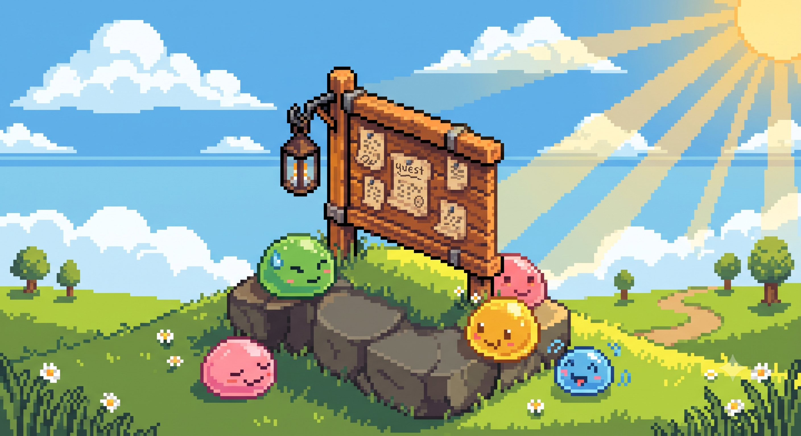

슬라임 광부
Lv.1 / Job Lv.1 / Exp. 0%
특성: -
HP
100/100
SP
50/50
🛠️ DEV 디버그 패널
🪜 층 점프
사다리 복구 수호전
45초
웨이브 준비
HP 100/100
지하 30층 갱도
(0, 0)
깊이 1m
구역 1/6
⛏️
50/50
가방
🏠 임시 은신처
골드 0G
가방 0/15
곡괭이 Lv.1 (35/50)
물약이랑 간식 좀 보고 가게!
환전 시세 — 암석/흙 1G · 철광석 5G · 미스릴 20G · 화염 원석 15G · 박쥐 날개 10G

🎉
의뢰 완료!
✨ 슬라임 진화!
Lv.5 달성! 진화 형태를 하나 선택하세요.
🛡️ 수문장 격파!
B1F 수문장을 물리쳤습니다! 층 돌파 보상을 하나 선택하세요.
💤 어서오세요!
자리를 비운 동안 미니 일꾼들이 열심히 일했어요!
골드 +0G / 철광석 +0개 획득

🎉 자유의 햇살!
지상 탈출에 성공했습니다!
⏱️ 플레이 타임0분
⛏️ 채굴한 암석0개
🗿 처치한 보스0마리
💰 모은 골드0G
🧙 최종 레벨1
🗼 타워 건설
캐둔 광석과 골드로 즉시 건설합니다.
✨ 전설 특성 각성
봉인전을 지켜냈습니다! 2단계 전설 특성을 하나 선택하세요.